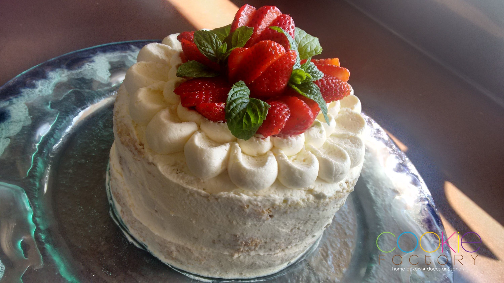

Bolo 3 Leite
Deliciosamente úmido este bolo é quase unanimidade. Alguns de vocês vão notar uma grande semelhança
ao toalha felpuda, que é servido envolvido em coco ralado. Eu mesma uso a mesma receita da massa que
aprendi em um dos cursos de confeitaria que fiz em BH há alguns anos. Eu queria, no entanto, apresentar
a você uma montagem diferente para fugir dos pedaços embrulhados em papel alumínio ou servidos em uma
assadeira. Gosto muito da ideia de levar um bolo bonito à mesa para encantar o olhar, afinal de contas,
o paladar já é causa ganha!
Seja servido com frutas ou sem acompanhamento, sirva gelado. Para esses dias quentes um presente
delicioso e refrescante. Em algumas situações fora do Brasil tive o prazer de experimentar o bolo Tres
Leches servido com chantili e polvilhado com canela. Uma boa opção também.
Preparo: 8 horas
Rendimento:10 Porçoes
Ingredientes
Massa:
- 300gr de açúcar refinado
- 250gr ovos inteiro
- 280gr de farinha de trigo
- 240gr de leite integral
- 4gr de fermento em pó
Calda 3 leites:
- 395gr leite condesado
- 240gr leite integral
- 250gr de creme de leite
- Baunilha a gosto (opcional)
Cobertura:
- 300gr de creme de leite fresco
- 40gr de açúcar de confeiteiro
- morangos fresco (quanto baste)
Preparação:
- Preaqueça o forno a 170 graus (temperatura média). Separe uma forma de 23 cm
de diâmetro, com fundo falso e forre o fundo com papel manteiga. Não precisa untar
as laterais. É importante usar a forma de fundo falso, pois o bolo precisará ser
retirado com cuidado para não quebrar. Você pode assar em uma assadeira normal,
mas não conseguirá o resultado da foto.
- Misture a farinha com o fermento. Reserve.
- Na batedeira, usando o globo, bata os ovos inteiros com o açúcar por uns 10 minutos
em velocidade alta. O tempo é estimado, mas bata até triplicar de volume. O resultado é
um creme amarelo clarinho.
- Retire a vasilha da batedeira e alterne a adição dos ingredientes secos com o leite.
Lembre-se sempre de peneirar os secos no momento de misturar à massa. Mexa delicadamente,
com o fouet ou espátula, até incorporar todos os ingredientes.
- Vire a massa na forma preparada e leve ao forno por aproximadamente 40 minutos.
O tempo de forno é estimado. Faça o teste do palito.
- Retire o bolo do forno e fure toda a área do bolo usando um palito de churrasco ou
garfo. Deixe sobre uma grade enquanto prepara a calda.
- Misture todos os ingredientes da calda e vire sobre o bolo ainda quente. Vá devagar,
caso contrário, a calda não será absorvida lentamente e poderá derramar na lateral da forma.
- Cubra o bolo com plástico-filme e leve à geladeira por 8 horas. Eu normalmente faço à noite
e deixo na geladeira até o dia seguinte.
Montagem:
- Retire o bolo da geladeira e passe uma faquinha em toda lateral da forma.
- Vire o bolo sobre um prato e retire a forma lentamente. O fundo da forma ficará
preso ao papel manteiga, basta passar uma faquinha para descolar e soltar o papel do bolo.
- Bata o creme de leite fresco gelado com o açúcar na batedeira até chegar ao ponto
de chantili. Vire sobre o topo do bolo fazendo movimentos com o fundo de uma colher.
Você pode aumentar a quantidade de cobertura para cobrir o bolo por inteiro.
- Decore com morangos frescos ou as frutas de sua preferência.
Voltar para o topo